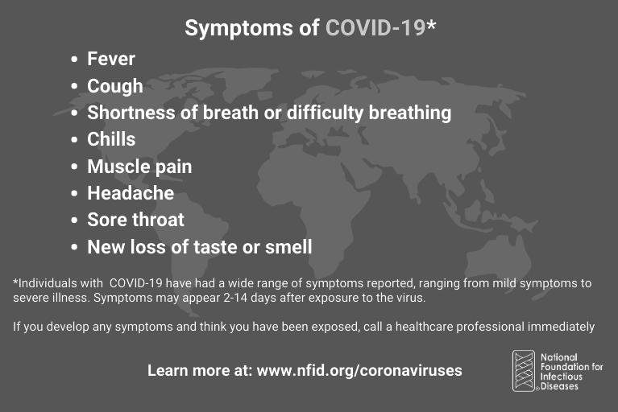
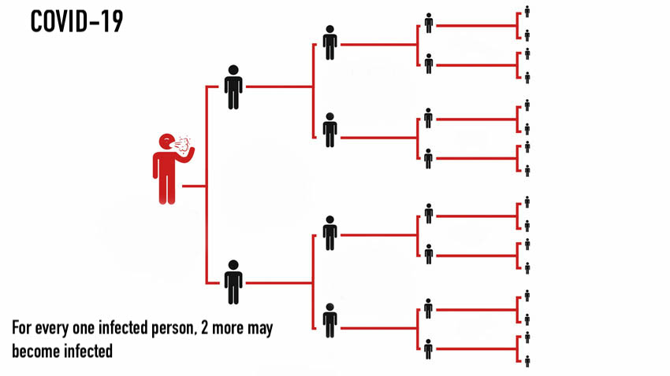

Grain of Salt: COVID-19

COVID-19 is an infectious disease caused by a novel coronavirus, named severe acute respiratory syndrome coronavirus 2 (SARS-CoV-2). It originated in the city of Wuhan, Hubei Province, Central China. The disease was first identified in December 2019 and has since spread globally, resulting in an ongoing pandemic.
The virus is spread mostly through close contact (within 6 feet), primarily through respiratory droplets produced by coughing, sneezing, and talking. The virus can also transmit through surfaces where the droplets land (called "fomites"). Some studies suggest that the virus can also transmit through aerosols, which are tiny respiratory droplets that can remain suspended in the air, as opposed to larger droplets that fall to the ground within a few feet. A majority of infections are mild (80%), while 15% are severe and 5% are life threatening.
The image below shows the common symptoms. The incumbation period is the period before symptoms show, which may be from 2-14 days after exposure to the virus.

It is estimated the for every one person who contracts COVID-19, 2 to 2.5 other people will be infected on average. This called the R0 (pronounced "R naught"). The illustration below shows the minimum R0 of COVID-19, which is 2.

NOTE: This site is not meant to be used as a primary source for information about COVID-19. Learn more about COVID-19 at www.cdc.gov